Hesly Janeth Acosta Chavez
Animales en lista
- A
- Antílope Negro
- El sasin, antílope indio, antílope negro o cervicabra es una especie de mamífero artiodáctilo de la familia Bovidae que se encuentra en la India, Pakistán y Nepal.
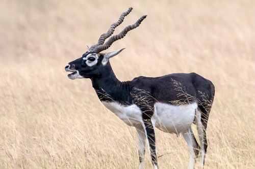
- Fuente: Naturalista Antílope Negro
- B
- Bisonte
- El bisonte de las planicies es el mamífero terrestre más grande de América del Norte. Algunos toros adultos pesan más de 2,000 libras (907 kg).
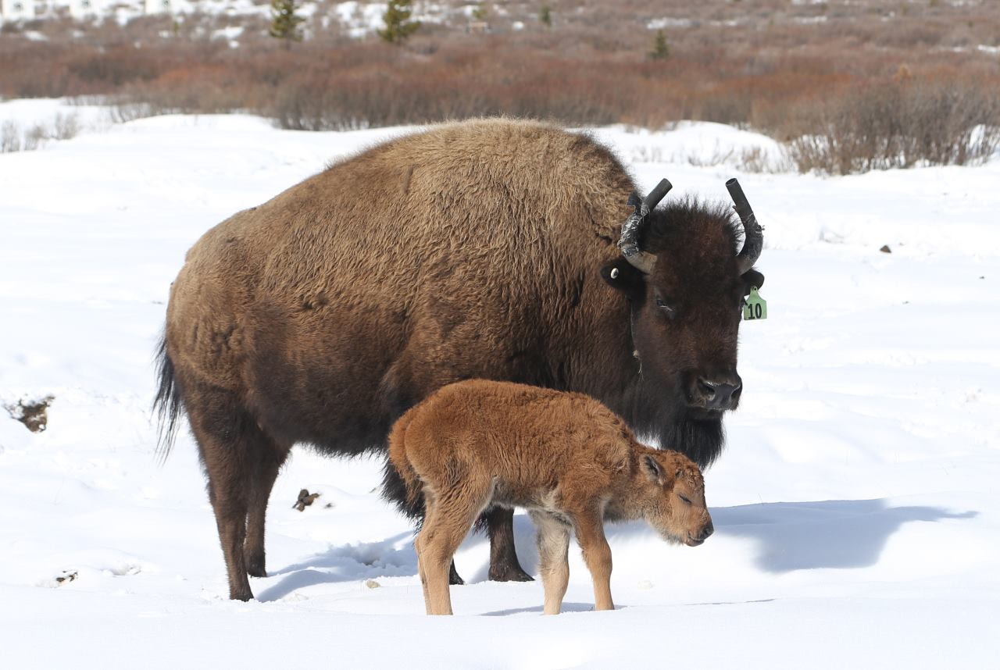
- Fuente: World Wildlife Fund Bisonte
- C
- Canguro rojo
- Los canguros tienen poderosas patas traseras en forma de Z y una cola fuerte que se usa para ayudar a equilibrar el cuerpo mientras saltan.
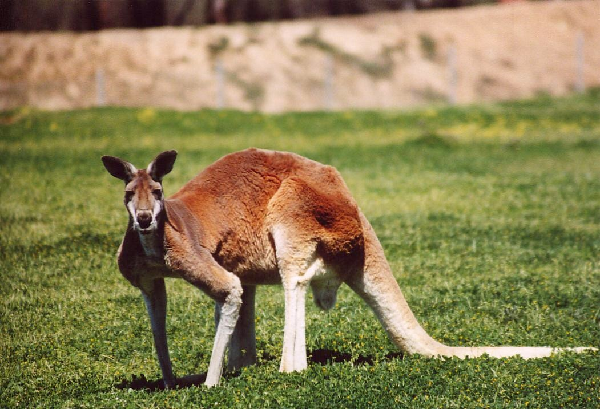
- Fuente: Zoológico de Denver Canguro
- D
- Dragón de Komodo
- Los dragones de Komodo son los lagartos más pesados de la Tierra, ya que alcanzan los 3 metros de longitud y pesan más de 300 kilos.
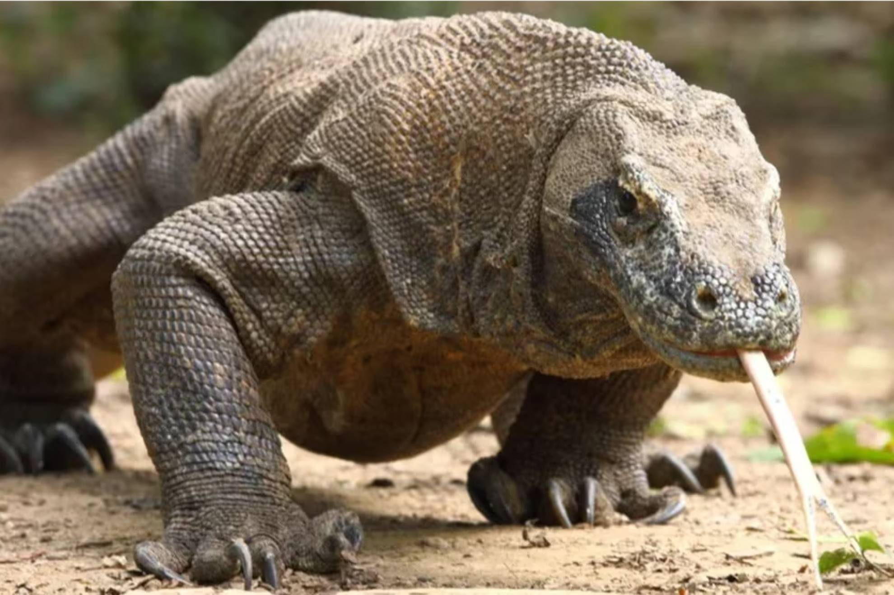
- Fuente: National Geographic Dragón
- E
- Espátula común
- La espátula común es una zancuda inconfundible por su gran tamaño, su color blanco y su costumbre de vadear los someros fondos de los humedales mientras rastrea el fango con su aplanado pico.
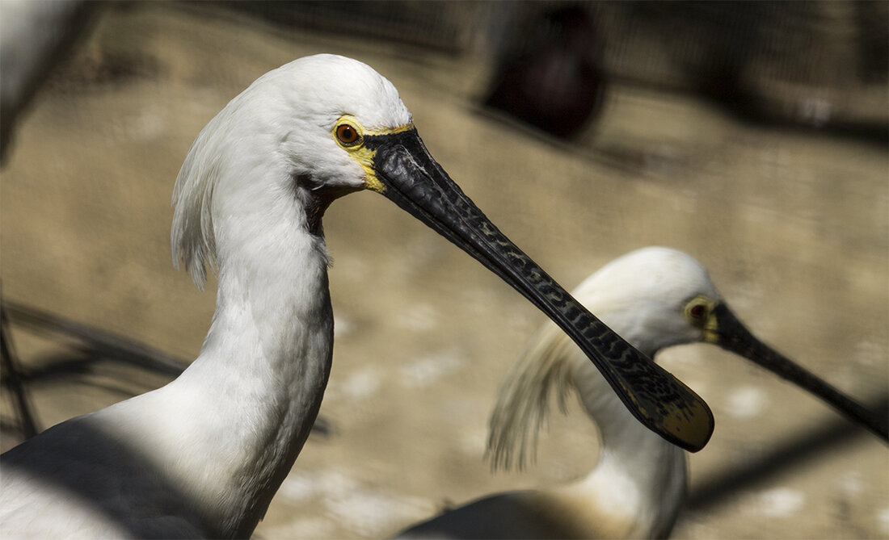
- Fuente: SEO/BirdLife Espatula
- F
- Frailecillo atlántico
- En el aire, los frailecillos son asombrosamente veloces. Baten sus alas hasta 400 veces por minuto y pueden alcanzar los 90 kilómetros por hora.
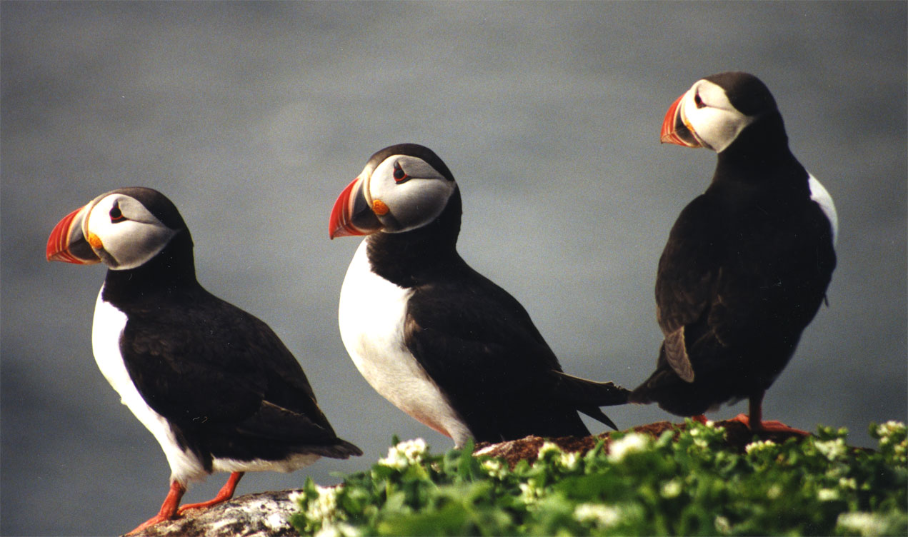
- Fuente: National Geographic Frailecillo
- G
- Gamuza
- El rebeco o gamuza es un bóvido de la subfamilia Caprinae presente en algunas cadenas montañosas de Europa, como los Cárpatos, los Alpes, el Cáucaso, y ciertas zonas montañosas de los Balcanes, Eslovaquia y Turquía.
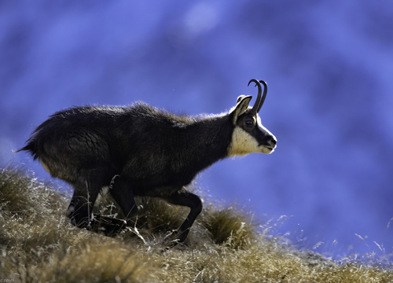
- Fuente: Naturalista Gamuza
- H
- Hiena
- Las hienas son una familia de mamíferos carnívoros pertenecientes al suborden de los feliformes. Es la familia menos numerosa en su orden, y una de las más pequeñas dentro de los mamíferos.
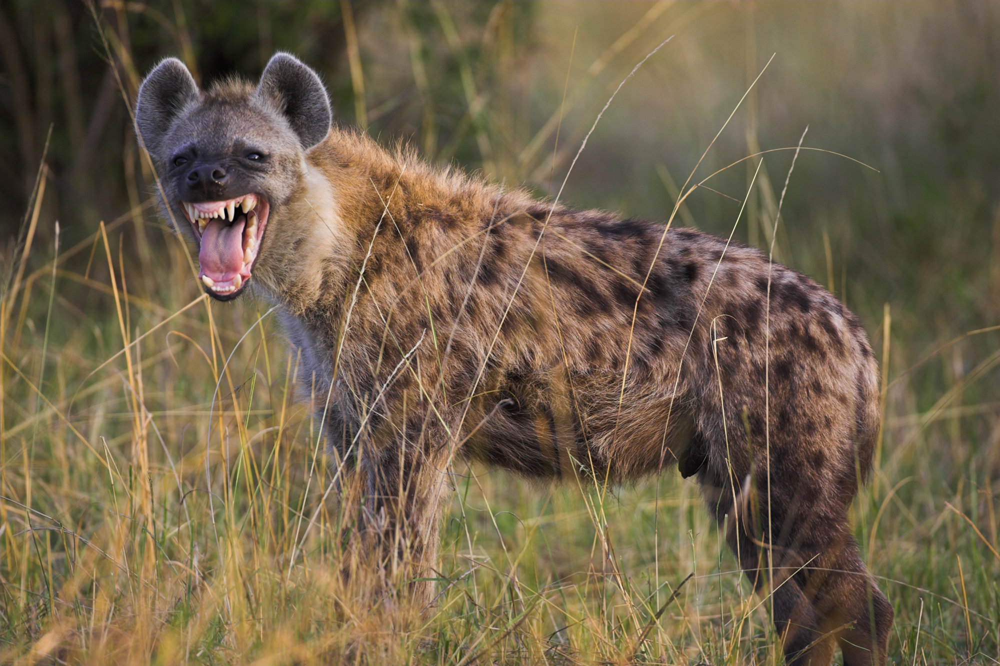
- Fuente: Wikipedia Hiena
- I
- Ipacaá
- Es una especie de ave gruiforme de la familia Rallidae que habita en Sudamérica, en las marismas de Bolivia, sudeste de Brasil, Paraguay, Uruguay y noreste de Argentina. Es bastante confiada, sale al descampado. Le gusta mucho bañarse.
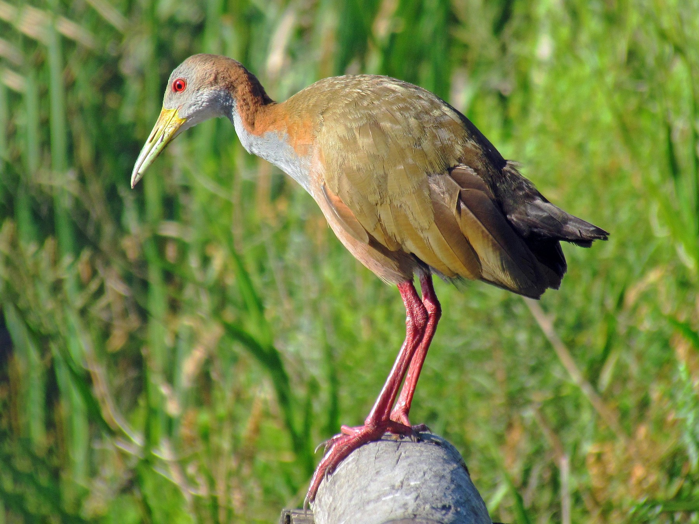
- Fuente: ANIMALIA Ipacaá
- J
- Jaguarundi
- Su nombre científico es Puma yagouaroundi. Es un mamífero de talla pequeña, apenas más grande que un gato doméstico. Llega a pesar entre 3,5 y 9 kilogramos y presenta pelaje castaño rojizo, gris o pardo oscuro.
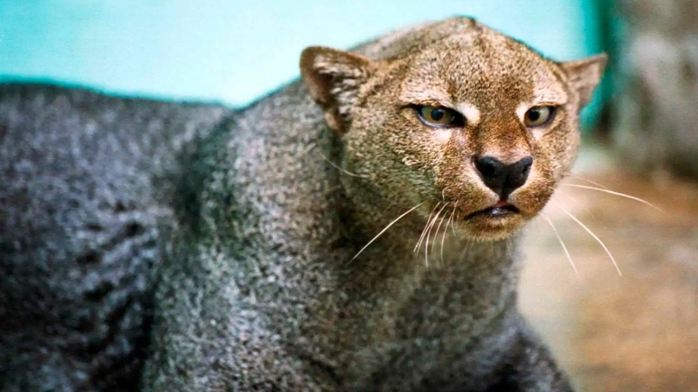
- Fuente: México Desconocido Jaguarundi
- K
- Koala
- Los koalas viven en el este de Australia, donde hay más eucaliptos; les gustan tanto estos árboles que casi nunca los abandonan. Además, gracias a sus extremidades y dedos oponibles se mantienen cómodamente sobre ellos. Los koalas pueden dormir hasta 18 horas al día, sujetos en las ramas y rincones de los árboles.
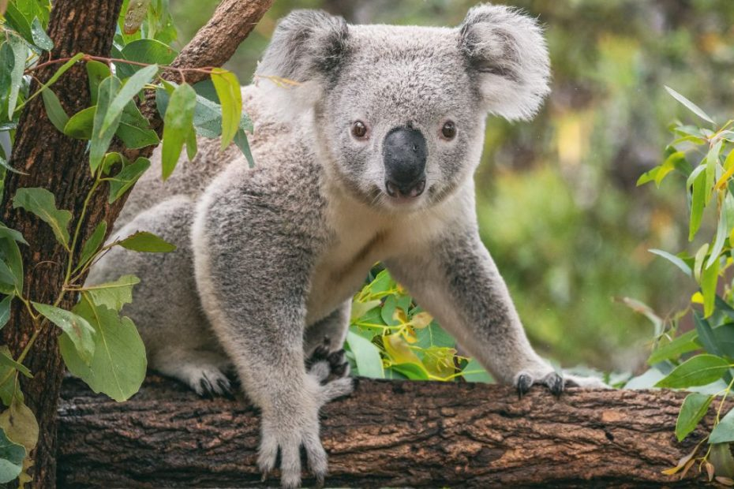
- Fuente: National Geographic Koala
- L
- Lémur
- El lémur de cola anillada es una especie altamente social que vive en grupos de hasta treinta individuos, y en los cuales se manifiesta un dominio social de las hembras
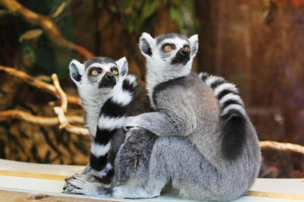
- Fuente: ZOOGUADALAJARA Lemur